China Employee Termination in 2026: Pulse Escalation-Cost Matrix Brief for Foreign Employers
Key takeaways
- In China termination cases, cost usually escalates in stages; early control failures multiply downstream expense.
- Foreign employers should manage each case with an escalation-cost matrix, not a single legal memo.
- The highest avoidable costs are often payroll recalculation after communication and dispute prep caused by weak evidence alignment.
- A practical sequence—legal route lock, payroll lock, script lock, closure lock—reduces both direct payout waste and management drag.
- This is a Pulse-style business brief, with legal depth provided in a secondary appendix.
What changed and why this matters now
Many multinational teams still estimate termination risk as a one-time severance figure. That estimate is too narrow. In practice, the real cost curve includes rework, delay, manager time, trust erosion, and dispute handling overhead. Once a case escalates, each correction tends to cost more than the previous one because communication has already moved ahead of controls.
This run rotates to an escalation-cost matrix format to help decision makers compare pathways in plain language: what level of control failure happened, how expensive that level becomes, and what intervention is still economically rational. It is designed for foreign operators who need fast board-ready clarity, not local legal jargon.
Plain-language legal and regulatory context first
China’s termination framework is route-dependent and evidence-sensitive. For foreign clients, the operational meaning is simple: you must be able to show that your reason, process, payout treatment, and communication record remain consistent with one another. If those layers drift apart, both legal and payroll risk rise quickly.
National law gives the baseline, but city-level implementation can change practical exposure. That is why escalation control should include a local interpretation checkpoint, especially before final communication and payout execution.
Pulse escalation-cost matrix
Level 0 — Controlled case (no material drift)
Typical condition: route, evidence, payroll worksheet, and script are aligned before employee communication.
Cost profile: predictable severance + planned payroll execution + low rework burden.
Management impact: normal.
Decision note: keep controls active; do not relax closure standards after payment.
Level 1 — Early warning drift
Typical condition: minor contradictions in chronology or incomplete local interpretation notes, but no employee communication yet.
Cost profile: low-to-moderate; mainly internal review time and short delay.
Management impact: limited if addressed within 24-48 hours.
Decision note: fix now. This is the cheapest intervention window.
Level 2 — Pre-communication control break
Typical condition: route assumptions change after payroll drafting, or payout logic lacks final legal/payroll alignment.
Cost profile: moderate; worksheet reconstruction, approval replay, and timeline compression costs.
Management impact: rising cross-functional workload and deadline pressure.
Decision note: pause communication and relock dependencies before proceeding.
Level 3 — Post-communication correction
Typical condition: employee-facing message is delivered, then payout, tax assumptions, or route position requires adjustment.
Cost profile: high; direct financial exposure plus credibility damage and elevated dispute probability.
Management impact: significant executive attention and reputational sensitivity.
Decision note: move to incident protocol; document rationale and remediation quickly.
Level 4 — Dispute-active escalation
Typical condition: contradictions, script issues, or document gaps become active dispute arguments.
Cost profile: very high and highly variable; includes legal workload, settlement pressure, and leadership distraction.
Management impact: sustained, often multi-week.
Decision note: stabilize evidence package, align commercial and legal objectives, and avoid uncoordinated concessions.
Why this matrix is useful for foreign employers
Cross-border organizations often underestimate management overhead as a cost center. The matrix makes hidden costs visible: review loops, recalculation cycles, local-advisor re-engagement, and delayed business decisions. It also creates a shared language for HR, legal, payroll, and finance teams that do not naturally work from the same risk lens.
Instead of debating abstract legal confidence, teams can ask practical questions: Which escalation level are we in? What is the likely next cost jump? Which control intervention has the best cost-to-risk effect right now?
Practical scenarios
Scenario A: “Move today” pressure with unresolved evidence
A business leader pushes for same-day action. Evidence is mostly complete but contains contradictions not yet reconciled.
Escalation read: Level 1 trending toward Level 2.
Best move: hold communication, run a short evidence sprint, and reissue route memo before payroll lock.
Scenario B: payout sheet changes after internal announcement draft
HR prepares manager messaging while payroll still iterates treatment assumptions.
Escalation read: Level 2 with risk of Level 3.
Best move: freeze all messaging, finalize one worksheet version, then complete script lock.
Scenario C: case closes commercially but records are fragmented
The employee outcome is agreed, but archive quality is poor and retrieval is slow.
Escalation read: Level 0 execution, Level 2 closure risk (future defensibility).
Best move: run closure remediation immediately and perform retrieval test before declaring completion.
Daily operations SOP (role-by-role)
HR case owner sets escalation level at intake, updates it at each transition, and drives the lock sequence. HR is responsible for chronology integrity and handoff discipline.
Legal/compliance owner validates route basis, flags interpretation risk, and approves route-switch triggers. Legal also signs off on incident protocol when escalation reaches Level 3+.
Payroll owner controls payout worksheet versioning, verifies IIT assumptions, and enforces no-release status without lock completion.
Manager owner receives approved scripts, confirms briefing completion, and escalates deviations immediately.
Vendor/EOR support helps local execution alignment, evidence packaging, and closure quality checks.
Document checklist + SLA suggestions
- D-7 to D-3 equivalent planning window: route memo, evidence index, local interpretation note, contradiction log.
- Pre-communication gate: final payout worksheet, legal/payroll approvals, script pack, spokesperson assignment.
- Payroll day / execution point: payment proof plan, acknowledgment records template, incident fallback script.
- Post-run closure window: final memo, archive index, retrieval-test result, lessons-learned log.
Exception handling playbook
- Evidence contradiction discovered late: raise escalation level, suspend outbound communication, and issue a revised decision packet.
- Payroll assumptions disputed internally: invalidate draft worksheet, assign single source-of-truth owner, rerun approval chain.
- Manager off-script communication: trigger correction protocol, capture factual record, and align follow-up messaging.
- Local practice uncertainty remains unresolved: mark as open risk; obtain local specialist confirmation before route commitment.
System implementation notes
Track escalation level as a mandatory case field in HR workflow systems. Link scheduling permissions to lock status so meetings cannot be sent when payroll or script locks are incomplete. Store worksheet and script versions with immutable timestamps and owner IDs.
For governance reporting, publish weekly metrics: percentage of cases reaching Level 3+, average time spent at each escalation level, number of post-communication corrections, and closure retrieval pass rate.
Common mistakes and prevention
- Mistake: pricing risk only as severance amount.
Prevention: include rework and dispute overhead in case economics.
- Mistake: communicating before worksheet lock.
Prevention: hard system block tied to lock status.
- Mistake: route shifts without full dependency refresh.
Prevention: automatic reset of script and payroll approvals after route change.
- Mistake: weak post-case archive discipline.
Prevention: retrieval-test requirement before closure sign-off.
What to do now
Launch an escalation-cost view for all active China termination cases this week. Assign each case a current level (0-4), identify the next likely cost jump, and set one preventive action owner. Then enforce one non-negotiable policy: no employee-facing communication unless legal route, payroll worksheet, and script controls are simultaneously locked.
At leadership level, add a 15-minute weekly review focused only on Level 2+ cases. This creates early intervention discipline and reduces expensive late-stage surprises.
What to watch next
- Whether internal speed pressure is pushing more cases into Level 2 or 3.
- Whether payout/tax inconsistencies are clustering in specific teams or cities.
- Whether closure quality is improving as retrieval testing becomes standard.
FAQ
1) Why use escalation levels instead of a simple legal pass/fail?
Because cost and risk evolve over time; levels capture when intervention still has strong economic value.
2) Which level is usually most expensive to ignore?
Level 2, because it often becomes Level 3 after communication and then costs rise sharply.
3) Is a higher payout always cheaper than prolonged control work?
Not necessarily; higher payouts without control alignment can still lead to dispute and rework costs.
4) How often should escalation level be reassessed?
At each major transition and any material fact or route change.
5) Does this replace local legal advice?
No. It supports operational decision quality but does not replace legal, tax, or employment advice.
6) What KPI should boards watch first?
Post-communication correction rate is a strong signal of control health.
Legal depth appendix (secondary)
This brief is grounded in the PRC Labor Contract Law baseline and supplemented by practitioner and payroll references used by multinational employers. In real cases, outcomes depend on fact quality, procedural consistency, and local interpretation. Employers should validate route strategy and payout/tax treatment with qualified local advisors for high-impact decisions.
Soft CTA
If your team needs compliance-first support on China employee termination, China-Payroll.com can help implement escalation controls, payroll lock workflows, and defensible case-closure standards.
Disclaimer
This content is informational only and does not constitute legal, tax, or employment advice.
Sources
- National People’s Congress of China, Labor Contract Law of the PRC (English), accessed 2026-03-07: http://www.npc.gov.cn/zgrdw/englishnpc/Law/2007-12/13/content_1384064.htm
- ICLG, Employment & Labour Laws and Regulations: China, accessed 2026-03-07: https://iclg.com/practice-areas/employment-and-labour-laws-and-regulations/china
- Littler, Key Recent Developments in China’s Employment Law, accessed 2026-03-07: https://www.littler.com/news-analysis/asap/key-recent-developments-chinas-employment-law-china-us-comparative-perspective
- PwC Tax Summaries, China Individual — Taxes on Personal Income, accessed 2026-03-07: https://taxsummaries.pwc.com/peoples-republic-of-china/individual/taxes-on-personal-income
- China Briefing, China Human Resources and Payroll Guide, accessed 2026-03-07: https://www.china-briefing.com/doing-business-guide/china/human-resources-and-payroll
Need local employment support in China?
If you need a compliance-first partner for hiring, payroll, and risk controls in China, China-Payroll.com can help evaluate the right setup.
Image Prompt Pack
Create a 16:9 hero image for article title: 'China Employee Termination in 2026: Pulse Escalation-Cost Matrix Brief for Foreign Employers'. Scene: global operations team evaluating workforce model options for China market entry. Include motifs: decision matrix…